Aurora, le moniteur matériel qui parle en mots simplesAurora, the hardware monitor that speaks plain words
Tout ce qu'il faut pour parler d'Aurora : des textes à copier, des captures en haute résolution, le logo et des vidéos. Tout est libre d'utilisation pour présenter Aurora. Everything you need to talk about Aurora: copy-ready text, high-resolution screenshots, the logo and videos. Everything here is free to use to present Aurora.
En brefAt a glance
Les faits à retenir.The key facts.
- NomName
- Aurora — Moniteur matérielAurora — Hardware Monitor
- Version
- 2.2.0, 23 octobre 20262.2.0, October 23, 2026
- PrixPrice
- Gratuite, sans publicité, sans compte · des skins en option, 3 $ chacun · sa licenceFree, no ads, no account · optional skins, CA$3 each · its licence
- SystèmeSystem
- Windows 10 et 11, 64 bits · 11,1 MoWindows 10 and 11, 64-bit · 11.1 MB
- ConfianceTrust
- Installeur signé électroniquementDigitally signed installer
- Installation
- Depuis le site, ou en une ligne :
winget install Neurogis44.AuroraFrom the website, or in one line:winget install Neurogis44.Aurora - TechnologieTechnology
- Écrite en Rust, un langage moderne conçu pour la sécuritéWritten in Rust, a modern language built for safety
- LanguesLanguages
- Français et anglaisFrench and English
- Vie privéePrivacy
- Aucune mesure envoyée ; Internet seulement pour le numéro de version, et quand on le demandeNo readings sent; the Internet only for the version number, and when you ask
- CréateurCreator
- Denis, au QuébecDenis, in Quebec
- Site et contactWebsite and contact
- auroraapp.ca · contact@auroraapp.ca
Textes à copierCopy-ready text
À reprendre tels quels, ou à adapter.Use them as they are, or adapt them.
En une phraseIn one sentence
Aurora est un moniteur matériel gratuit pour Windows qui surveille ton PC en direct — températures, ventilateurs, disques, réseau, FPS en jeu — et te dit en mots simples s'il va bien. Aurora is a free hardware monitor for Windows that watches your PC live — temperatures, fans, drives, network, in-game FPS — and tells you in plain words whether it's doing well.
En un paragrapheIn one paragraph
Aurora est un moniteur matériel gratuit pour Windows 10 et 11. Elle affiche en direct les températures, les ventilateurs, les disques, le réseau et les FPS en jeu dans un tableau de bord clair, et surtout, elle les comprend : son onglet Santé dit en mots simples ce qui cloche et quoi faire, qu'il s'agisse d'un disque usé, d'un ventilateur arrêté, d'une erreur que Windows a notée en silence ou d'un écran branché au mauvais endroit. Elle garde aussi la trace de ce qui a changé sur le PC, pour relier un problème à sa cause probable, et mesure l'effet de chaque changement — un pilote, un BIOS, une mise à jour — sur les jeux, les températures et le démarrage. En jeu, elle dit ce qui limite les FPS : la carte graphique, le processeur ou un bridage, et mesure le temps de chaque image, saccades comprises. Elle fait aussi son propre essai de stabilité : chaque calcul est vérifié, et un cœur du processeur qui se trompe est nommé. Depuis la 2.1.0, elle répond aux questions qu'on se pose devant son PC : pourquoi il est lent, qui le réveille la nuit, si les fichiers sont à l'abri et comment s'est passée la semaine ; et pour un PC neuf ou usagé, elle vérifie tout d'un coup et donne un certificat. Depuis la 2.2.0, elle s'adapte à chacun : tout son texte peut grossir jusqu'à 200 %, elle reste lisible dans une petite fenêtre, et son overlay peut s'afficher dans RivaTuner, en plein écran exclusif aussi. Elle explique aussi les mises à jour de Windows en mots simples, et prépare un rapport complet pour qui aide à distance. Elle aide à faire de la place en toute sécurité : elle trouve les fichiers en double, tout passe par la corbeille, et elle montre ce qui remplit vraiment le disque. Sans compte ni publicité, elle n'envoie aucune mesure, elle parle français et anglais, et elle est écrite en Rust, un langage conçu pour la sécurité. Aurora is a free hardware monitor for Windows 10 and 11. It shows temperatures, fans, drives, network and in-game FPS live in a clear dashboard, and above all, it makes sense of them: its Health tab says in plain words what's wrong and what to do — a worn drive, a stopped fan, an error Windows logged silently, or a display plugged into the wrong port. It also keeps track of what changed on the PC, to link a problem to its likely cause, and measures the effect of every change — a driver, a BIOS, an update — on games, temperatures and startup. In game, it tells you what limits the FPS: the graphics card, the processor or an FPS cap, and measures the time of every frame, stutters included. It also runs its own stability test: every calculation is checked, and a processor core that gets one wrong is named. Since 2.1.0, it answers the questions we all ask in front of our PC: why it's slow, what wakes it at night, whether the files are safe and how the week went; and for a new or second-hand PC, it checks everything in one go and gives a certificate. Since 2.2.0, it adapts to everyone: all its text can grow up to 200%, it stays readable in a small window, and its overlay can show in RivaTuner, in exclusive full screen too. It also explains Windows updates in plain words, and prepares a full report for whoever helps remotely. It helps free up space safely: it finds duplicate files, everything goes through the Recycle Bin, and it shows what's really filling the drive. No account, no ads, it sends none of your readings, it speaks French and English, and it's written in Rust, a language built for safety.
Ce qui la distingueWhat sets it apart
Aurora ne fait pas que mesurer : elle explique.Aurora doesn't just measure: it explains.
Le texte plus grosBigger text
Pour les personnes qui voient moins bien : tout Aurora à 125, 150 ou 200 %, les fenêtres à part avec elle. Dans les Réglages, ou au clavier : Ctrl + + et Ctrl + −.For people who don't see as well: all of Aurora at 125, 150 or 200%, the separate windows with it. In Settings, or on the keyboard: Ctrl + + and Ctrl + −.
L'overlay dans RivaTunerThe overlay in RivaTuner
Avec RivaTuner (gratuit, souvent installé avec MSI Afterburner), c'est lui qui dessine les chiffres d'Aurora dans le jeu : en plein écran exclusif aussi, sans fenêtre par-dessus. Aurora n'injecte rien dans les jeux.With RivaTuner (free, often installed with MSI Afterburner), it's RivaTuner that draws Aurora's readings in the game: in exclusive full screen too, with no window on top. Aurora injects nothing into games.
Aurora dans une petite fenêtreAurora in a small window
Sur une moitié d'écran ou un portable, la vue d'ensemble passe en une colonne, les onglets et les boutons passent à la ligne, et rien ne se coupe.On half a screen or a laptop, the overview switches to one column, the tabs and buttons wrap, and nothing gets cut off.
Aurora répond à tes questionsAurora answers your questions
« Pourquoi mon PC est lent ? » Un clic, et Aurora regarde ce qui le ralentit en ce moment : un programme qui prend tout, une mise à jour, l'antivirus, la chaleur. « Qui réveille ton PC la nuit ? » La carte réseau ou une tâche de Windows, et de quoi l'en empêcher d'un clic.“Why is my PC slow?” One click, and Aurora looks at what's slowing it down right now: a program hogging everything, an update, the antivirus, the heat. “What wakes your PC at night?” The network adapter or a Windows task, and a way to stop it in one click.
Es-tu protégé ?Are you protected?
Si le disque lâchait demain, qu'est-ce qui serait perdu ? OneDrive, l'Historique des fichiers, les points de restauration : Aurora dit ce qui est à l'abri, et ce qui ne l'est pas.If the drive failed tomorrow, what would be lost? OneDrive, File History, restore points: Aurora says what's safe, and what isn't.
Ta semaineYour week
Chaque lundi, le bilan de la semaine d'avant : le temps allumé, les jeux, le plus chaud, les plantages, ce qui a changé, chaque nombre comparé à la semaine d'avant.Every Monday, the week before in review: time powered on, games, the hottest, crashes, what changed, each number compared with the week before.
Vérifier tout le PCCheck the whole PC
Pour un PC neuf, réparé ou acheté usagé : en un quart d'heure, tout est vérifié, la mémoire vive comprise, et un certificat est prêt pour le technicien.For a new, repaired or second-hand PC: in about fifteen minutes, everything is checked, memory included, and a certificate is ready for the technician.
Le mode nuit des ventilateursNight mode for the fans
Des ventilateurs plus discrets aux heures choisies, sans jamais oublier leurs sécurités.Quieter fans at the hours you choose, safeguards always kept.
L'essai de stabilitéThe stability test
Le PC poussé à fond, avec ou sans son propre outil : chaque calcul vérifié, comme OCCT, et un cœur qui se trompe est nommé, celui à adoucir dans le Curve Optimizer.The PC pushed flat out, with or without your own tool: every calculation checked, like OCCT, and a core that gets one wrong is named, the one to soften in the Curve Optimizer.
Chaque image de tes partiesEvery frame of your games
Le temps d'image de chaque partie, les saccades, le 1 % et le 0,1 % bas ; chaque cœur à la loupe, les disques en détail, et un overlay pour les passionnés.Each game session's frame time, the stutters, the 1% and 0.1% lows; every core up close, the drives in detail, and an overlay for enthusiasts.
Les fichiers en double, en toute sécuritéDuplicate files, safely
Les copies exactes d'un même fichier dans les dossiers de la personne, comparées octet pour octet. Aurora propose la copie à garder, la personne coche, et tout part à la corbeille, chaque copie revérifiée juste avant. Les noms des fichiers ne quittent jamais le PC.Exact copies of the same file in the person's folders, compared byte for byte. Aurora suggests the copy to keep, the person checks, and everything goes to the Recycle Bin, each copy checked again just before. File names never leave the PC.
Ce qui prend vraiment la placeWhat really takes up the space
Peu de doublons ? Aurora le dit, et montre ce qui remplit chaque disque : les jeux (d'après leurs lanceurs), les dossiers, la corbeille, Windows et le reste, puis les jeux pas lancés depuis trois mois. Elle ne désinstalle rien.Few duplicates? Aurora says so, and shows what fills each drive: games (from their launchers), folders, the Recycle Bin, Windows and the rest, then the games not launched in three months. It uninstalls nothing.
Les mises à jour de Windows, en clairWindows updates, in plain words
Ce qui attend, en mots simples, avec un avis (conseillée, facultative, à ton rythme, à laisser) et la page de Microsoft dans la langue de Windows. L'onglet Santé avertit seulement si c'est sérieux. Aurora n'installe rien.What's waiting, in plain words, with advice (recommended, optional, at your own pace, leave it) and Microsoft's page in the Windows language. The Health tab only warns when it matters. Aurora installs nothing.
Le rapport pour le technicienThe report for the technician
Pour qui aide à distance : la fiche complète du PC, ce qui s'est passé avant le problème et ce que Windows a noté, en page web ou en texte. Rien de privé, et rien ne part tout seul.For whoever helps remotely: the PC's full profile, what happened before the problem and what Windows logged, as a web page or as text. Nothing private, and nothing goes out by itself.
Les skinsSkins
Neuf ambiances (blocs, tir tactique, ville ouverte, tir compétitif, arène de héros, bataille royale, BD de super-héros, salle des machines, vieil écran vert), 3 $ chacune : les couleurs, les polices et les dessins de tout Aurora, jusqu'à l'overlay. Les cinq thèmes restent gratuits.Nine moods (block-building, tactical shooter, open city, competitive shooter, hero arena, battle royale, superhero comics, engine room, old green screen), CA$3 each: the colors, fonts and drawings of all of Aurora, overlay included. The five themes stay free.
Un tableau de bord fluideA fluid dashboard
Tout bouge à la cadence de l'écran, et se met au repos pendant les parties : mesuré, aucune image perdue en jeu. Depuis la 1.0.10, environ trois fois moins de travail pour la carte graphique.Everything moves at the display's refresh rate, and rests during games: measured, no frame lost in game. Since 1.0.10, about a third of the work for the graphics card.
Un bilan de santé en mots simplesA health check in plain words
Ce qui cloche, pourquoi, et quoi faire : disques, températures, ventilateurs, pile du BIOS, bloc d'alimentation, et ce que Windows note sans rien dire.What's wrong, why, and what to do: drives, temperatures, fans, BIOS battery, power supply, and what Windows logs without a word.
La vérification du montageThe build check
Un écran branché sur la carte mère ou réglé trop bas, une carte graphique dans le mauvais port : des erreurs qui ne se voient pas.A display plugged into the motherboard or set too low, a graphics card in the wrong slot: mistakes you can't see.
La machine à remonter le tempsThe time machine
Pilotes, mises à jour, programmes au démarrage : ce qui a changé sur le PC, jour après jour, relié aux problèmes.Drivers, updates, startup programs: what changed on the PC, day after day, linked to problems.
Ce qui limite les FPSWhat limits the FPS
En direct dans l'overlay : la carte graphique à fond, un cœur du processeur qui la freine, ou un bridage. Et sur 30 jours, ce qu'il faudrait changer en premier.Live in the overlay: the graphics card maxed out, a processor core holding it back, or an FPS cap. And over 30 days, what to upgrade first.
L'effet de chaque changementThe effect of every change
Un pilote graphique, un BIOS, une mise à jour de Windows, un programme au démarrage : ce qu'il a donné, mesuré tout seul avant et après sur les jeux, les températures et le démarrage.A graphics driver, a BIOS, a Windows update, a startup program: what it did, measured on its own before and after on games, temperatures and startup.
L'onglet WindowsThe Windows tab
Windows lu en entier, et réglé seulement si on le coche, par les moyens officiels : chaque réglage se remet d'un clic, et jamais les protections.Windows read in full, and tuned only if you check it, through official means: each setting goes back in one click, and never the protections.
Les jeuxGames
FPS, 1 % bas, un overlay, tes jeux au fil du temps, et les gels ou plantages expliqués avec l'état du PC juste avant.FPS, 1% low, an overlay, your games over time, and freezes or crashes explained with the state of the PC just before.
La radiographie, tour ou portableThe X-ray, tower or laptop
Le PC dessiné d'après le vrai : ses vrais ventilateurs, qu'on peut nommer, l'air qui circule, les points chauds, et la batterie d'un portable.The PC drawn from the real one: its real fans, which you can name, the air flowing through, the hot spots, and a laptop's battery.
D'un PC à l'autreFrom one PC to another
Des fichiers envoyés entre les PC de la maison, chiffrés et sans passer par Internet ; leurs mesures, celles du téléphone par un code QR, et sept touches pour le Stream Deck.Files sent between the PCs at home, encrypted and never through the Internet; their readings, the phone through a QR code, and seven Stream Deck keys.
CapturesScreenshots
La vraie Aurora, en mode démonstration. Quarante-trois captures en PNG dans chaque langue (les fenêtres en 1746 × 983, les nouveautés de la 2.2.0, de la 2.1.0 et de la 2.0.0, l'overlay en jeu, le rapport pour le technicien, les fichiers en double) : en français ou en anglais (ZIP, 16,0 Mo). The real Aurora, in demo mode. Forty-three PNG screenshots in each language (the windows at 1746 × 983, what's new in 2.2.0, 2.1.0 and 2.0.0, the in-game overlay, the report for the technician, duplicate files): in English or in French (ZIP, 15.8 MB).
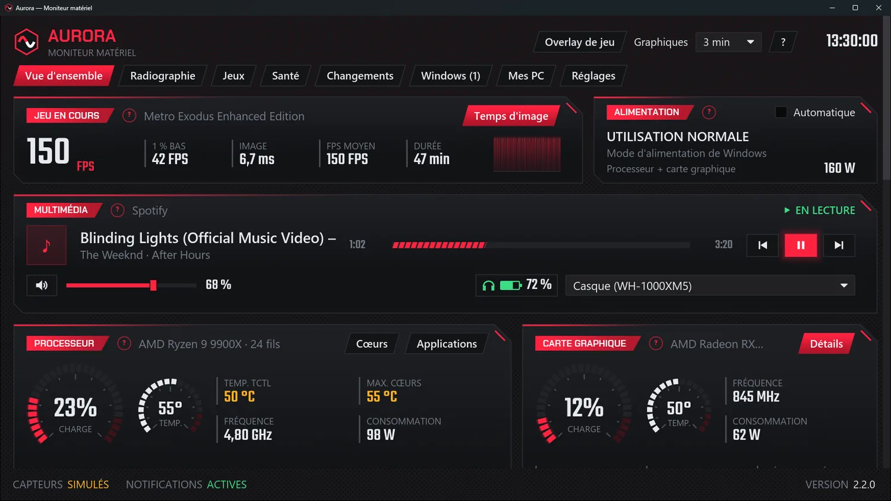
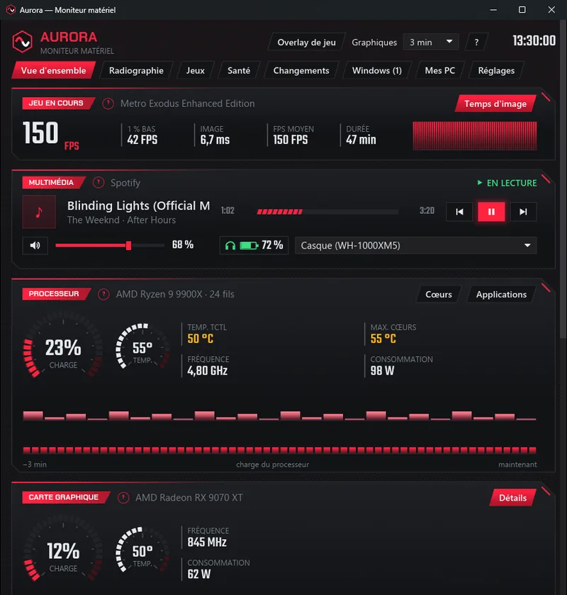

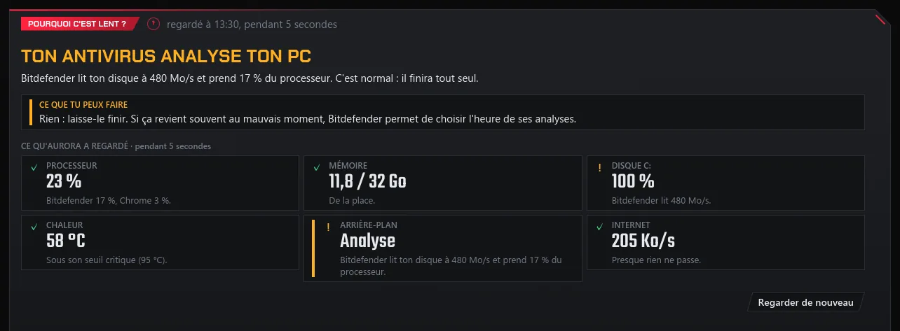
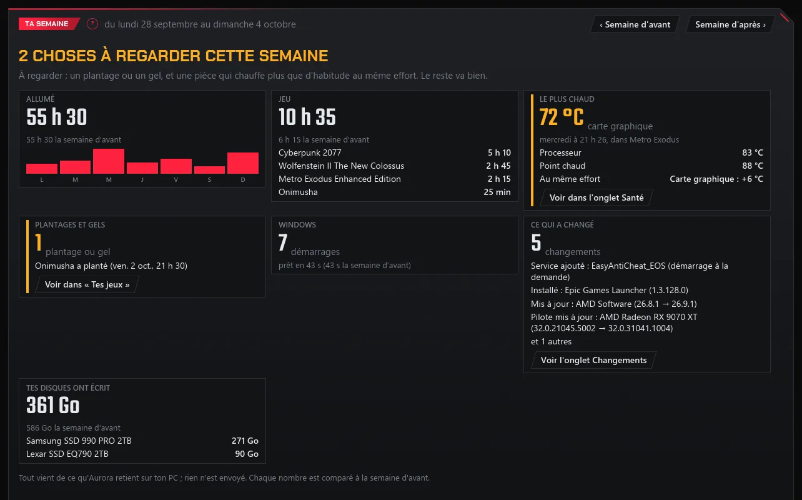
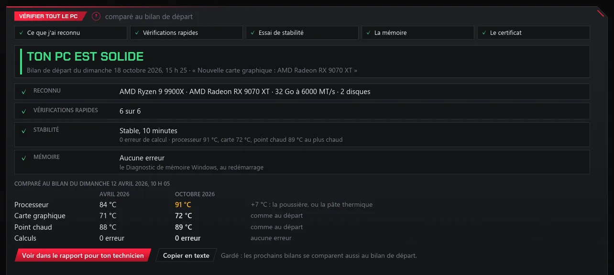
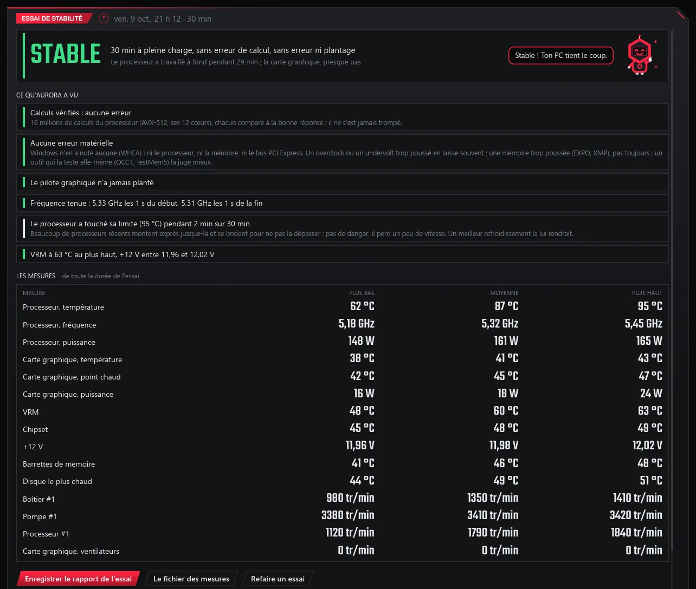
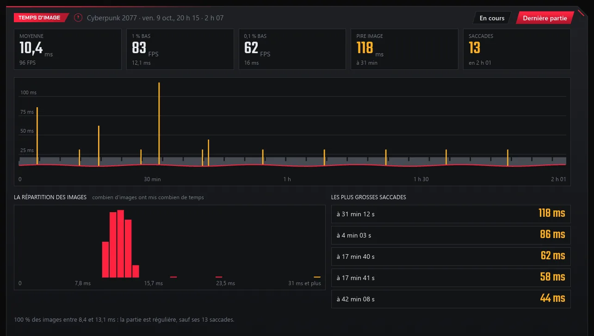
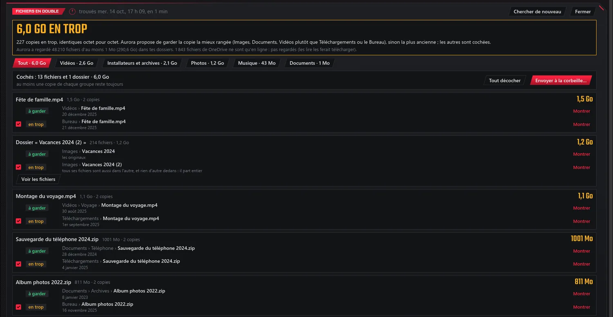
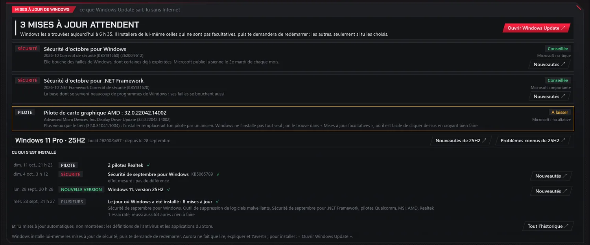
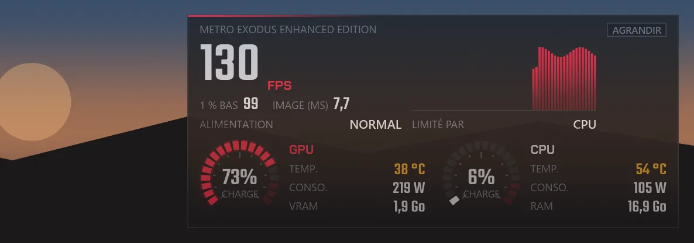
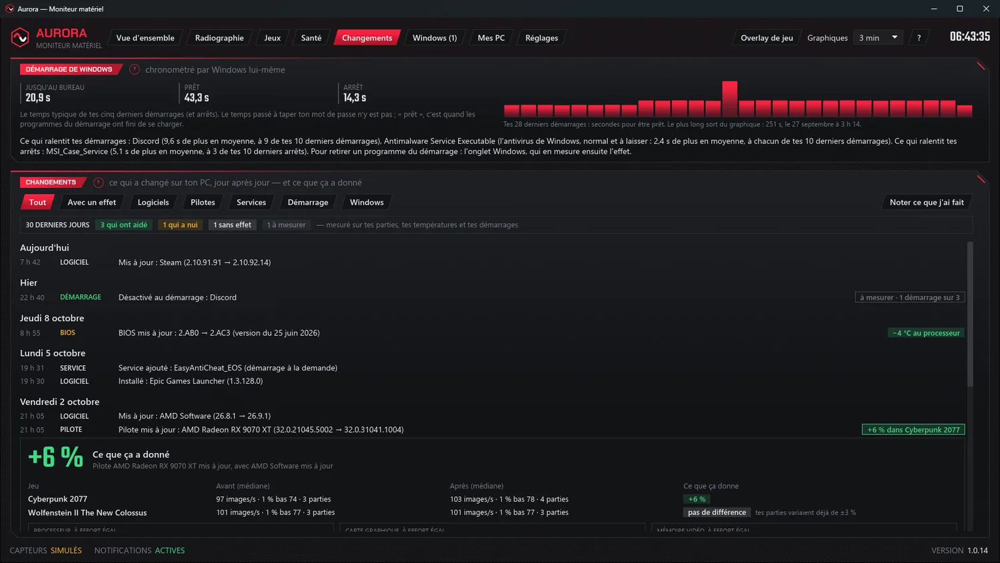
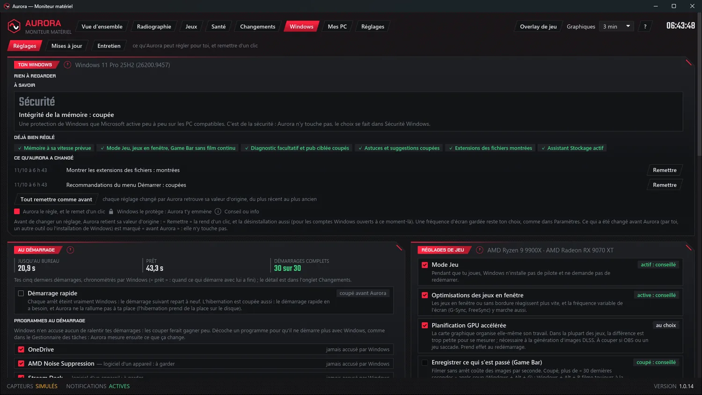
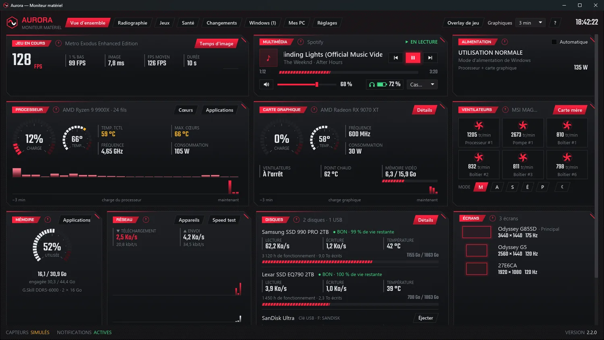
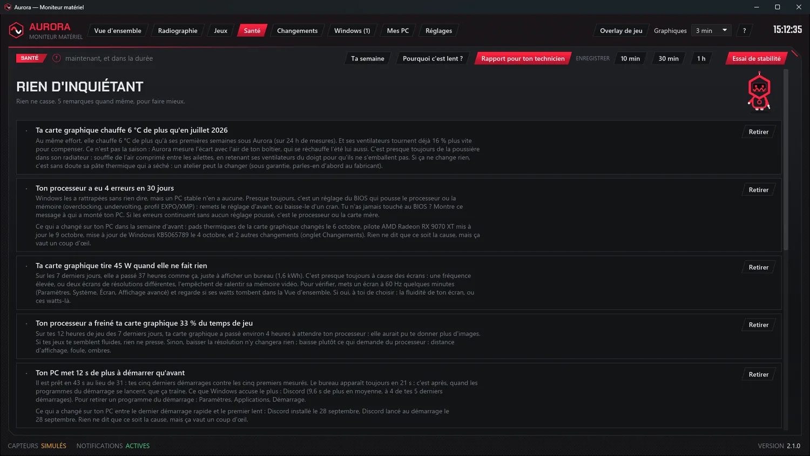
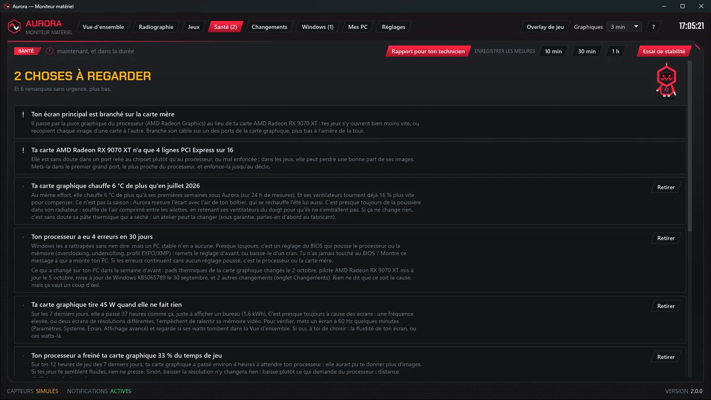
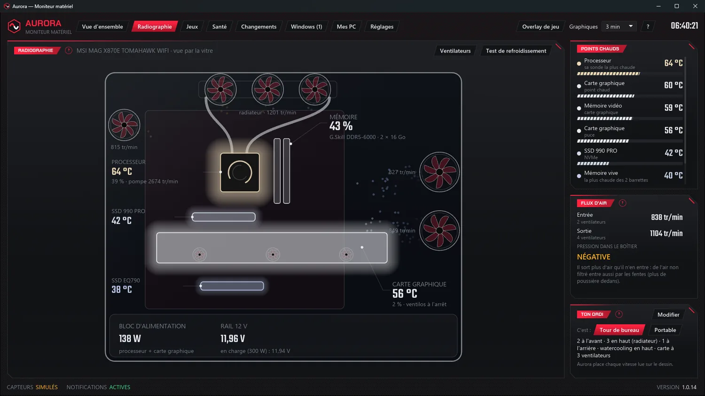
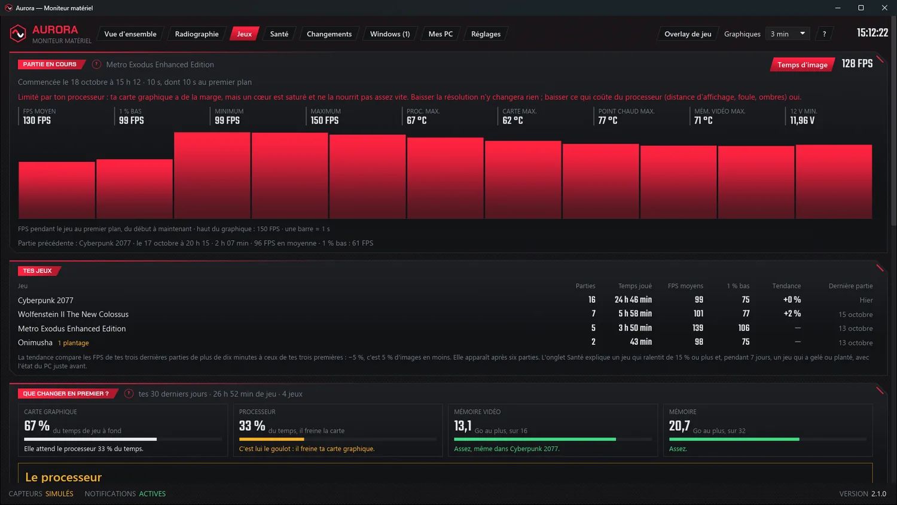
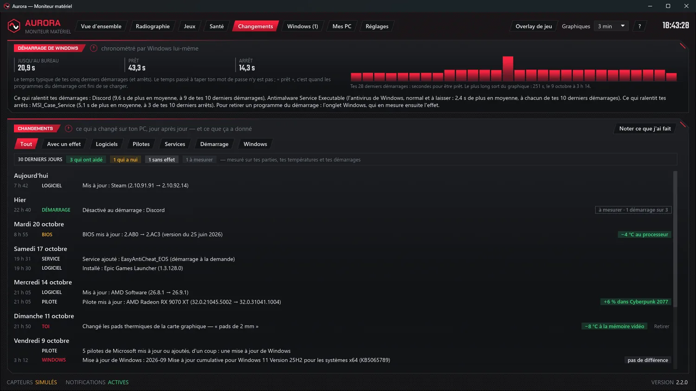
Logo
L'hexagone et son onde, sur fond transparent.The hexagon and its wave, on a transparent background.


VidéosVideos
La chaîne d'Aurora, et deux films sans son du tableau de bord à reprendre.Aurora's channel, and two silent clips of the dashboard you can reuse.
- Aurora 1.0 : le moniteur de PC gratuit, en françaisAurora 1.0: the free PC monitor (in French) (YouTube)(YouTube)
- Tout ton PC sur un seul écranYour whole PC on one screen (in French) (Short YouTube)(YouTube Short)
- La chaîne Aurora - Moniteur matérielThe Aurora channel
- Le tableau de bord en mouvement : en français ou en anglais (MP4, 8 s) ; la radiographie : en français ou en anglais.The dashboard in motion: in English or in French (MP4, 8 s); the X-ray: in English or in French.
Pour une vidéoFor a video
Filmer sans montrer ton PCFilm without showing your PC
Aurora a un mode démonstration, avec des mesures simulées et « Capteurs simulés » écrit en bas de la fenêtre. Touches Windows + R, puis : "C:\Program Files\Aurora\aurora.exe" --demo. Pas besoin de fermer ton Aurora : la démonstration s'ouvre à côté, sans droits administrateur.Aurora has a demo mode, with simulated readings and “Sensors simulated” written at the bottom of the window. Press Windows + R, then: "C:\Program Files\Aurora\aurora.exe" --demo. No need to close your Aurora: the demo opens alongside, without administrator rights.
Des idées de sujetsTopic ideas
- « Un moniteur de PC pensé aussi pour ceux qui voient moins bien »“A PC monitor made for people who don't see as well, too”
- « Pourquoi mon PC est lent ? Un logiciel gratuit répond en un clic »“Why is my PC slow? A free app answers in one click”
- « Ton PC se réveille la nuit sans toi : voici qui le réveille »“Your PC wakes up at night without you: here's what wakes it”
- « Mon PC va-t-il bien ? Un logiciel gratuit me le dit en mots simples »“Is my PC OK? A free app tells me in plain words”
- « Ton écran est peut-être branché au mauvais endroit »“Your display might be plugged into the wrong port”
- « Tes températures sur ton Stream Deck, gratuitement »“Your temperatures on your Stream Deck, for free”
- « Il n'est pas programmeur, et il a créé son logiciel avec l'IA »“He's not a programmer, and he built his app with AI”
Qui fait AuroraWho makes Aurora
« J'ai longtemps monté mes propres PC, et j'ai toujours voulu savoir ce qui se passe dedans, en mots simples plutôt qu'en colonnes de chiffres. Je ne suis pas programmeur : j'ai créé Aurora en travaillant avec une intelligence artificielle (Claude, d'Anthropic). Elle écrit le code ; moi, je décide de ce qu'Aurora doit faire et je l'essaie sur mes propres machines. Je l'ai d'abord faite pour moi, puis je l'ai partagée. Elle est gratuite, et elle le restera. Pour une question ou une entrevue, écris-moi à contact@auroraapp.ca : je réponds moi-même. »“I've been building my own PCs for a long time, and I always wanted to know what's going on inside, in plain words rather than columns of numbers. I'm not a programmer: I created Aurora by working with an artificial intelligence (Claude, by Anthropic). It writes the code; I decide what Aurora should do and test it on my own machines. I made it for myself first, then shared it. It's free, and it will stay free. For a question or an interview, write to me at contact@auroraapp.ca: I answer myself.”
— Denis
Présentation à copierBio to copy
Aurora est créée par Denis, un Québécois qui monte ses propres PC depuis des années. Sans être programmeur, il la développe avec l'IA Claude : l'IA écrit le code, lui décide de ce qu'Aurora doit faire et l'essaie sur ses machines. Aurora is made by Denis, a Quebecer who has been building his own PCs for years. Without being a programmer, he develops it with the Claude AI: the AI writes the code, he decides what Aurora should do and tests it on his machines.